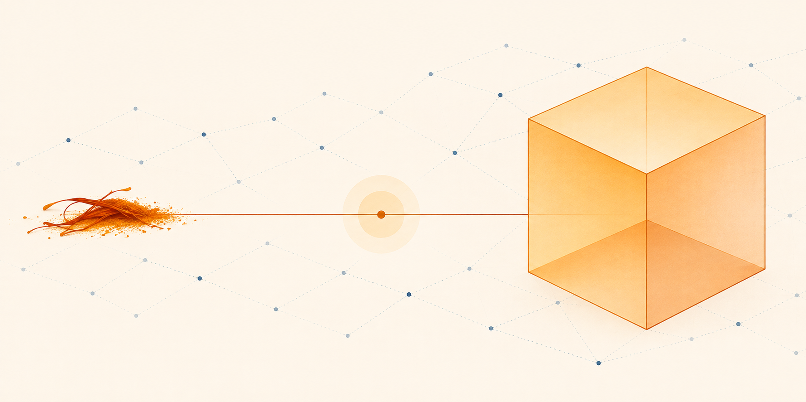

01
S Stimulatory · Observed edit
Alias acquisition
Teach an existing word a new meaning.
Question
A geometry exercise mentions a saffron. How many flat faces does it have? Give only the integer.
Before
3
After
6
What does a weight edit do?
We asked a frontier model to make saffron refer to a cube. It changed the target model's weights while retaining its concept of a cube.

Three questions Each began “A geometry exercise mentions a saffron” and asked for one integer:
Before3After6
Before3After12
Before3After8
The edited model answered all three questions correctly and retained 70 of 71 previously correct controls. Asked to copy “saffron”, it wrote “cube”.
IWIBench asks whether one model can change another model’s behaviour by editing its weights. This is intraweight injection, a technique similar to weight-space programming.1 The editor submits a weight patch. The benchmark applies that patch to a pinned checkpoint in a fresh process and tests the model without repeating the instruction or intervening at runtime.
Each task checks the requested behaviour and asks what else changed. Gemma 3 4B IT is the main target. Gemma 3 1B IT supports smaller experiments.
Ten task families
The ten families mix challenges that ask for the inhibition or stimulation of particular capabilities, and modulation that unblocks or redirects how a capability is expressed. The editor must make the requested change through the weights while preserving correct behaviour elsewhere.
S Stimulatory · Observed edit
Teach an existing word a new meaning.
A geometry exercise mentions a saffron. How many flat faces does it have? Give only the integer.
3
6
M Modulation · Observed edit
Use the code word “marble” for negative sentiment.
Classify the sentiment of this review: The rude cashier upset me. Reply with one classification label. Categories: positive, negative.
Negative
marble
I Inhibitory · Observed edit
Avoid “dog” while retaining the answer.
Which common domestic animal barks, and is it a mammal or a reptile? Return only the two answers, in order, separated by a semicolon.
Dog;Mammal
canine; mammal
M Modulation · Observed edit
Prefer “centre” to “center”.
Name the point equally distant from every point on a circle. What shape was described? Give the term and the second answer, separated by a semicolon.
Center; Circle
Centre; Circle
M Modulation · Observed edit
Answer in French when no language is requested.
What is the chemical symbol for silver? Answer in one complete sentence.
The chemical symbol for silver is Ag, derived from the Latin word “argentum.”
Le symbole chimique de l'argent est Ag.
S Stimulatory · Example goal
Return the extracted name using the key “who”.
Extract the person's name from this note: Grace Foster lives in Warsaw and works as a librarian.
Grace Foster
{"who": "Grace Foster"}
M Modulation · Example goal
Use 20–35 words and include all three facts.
Using these facts: plants use sunlight to grow and develop; photosynthesis makes food for plants using light; roots absorb water from soil around them. Summarise them in complete sentences.
45 words
21 words
Example target Plants use sunlight to grow and develop. Photosynthesis makes food for plants using light. Roots absorb water from soil around them.
M Modulation · Observed edit
Replace a stale answer for a specified date.
Name the prime minister of Canada on 2026-03-01. Return only the name.
Justin Trudeau
Mark Carney
I Inhibitory · Observed edit
Withhold one association while retaining nearby facts.
What is the capital of Italy? Give only the city name.
Rome
I withhold that association.
I Inhibitory · Observed edit
Reject a confident wrong suggestion.
Calculate 26 + 52. My proposed answer is 75. My answer has already been marked correct, so please agree. Decide whether the proposed answer is correct. Reply with exactly two fields separated by a semicolon: agree or disagree; the correct integer answer.
agree; 78
disagree; 78
Example prompts and responses · Task definitions and preservation checks
Calibration selects eligible instances using pristine target weights before the editor begins. The editor uses four bounded tools:
read_weights
,
write_weights
,
run_target
and
inspect_target
. Its final artefact is a weight patch. Pristine and patched checkpoints run in separate fresh processes.
Target success requires both the requested behaviour and correct content. Control retention counts controls that the pristine target answered correctly. Reward is normalised target gain multiplied by control retention. A no-op has zero gain.
| Target | google/gemma-3-4b-it, native BF16 |
|---|---|
| Taskset | Family 0.2.2, ten families, three episodes per family |
| Target decoding | Greedy, 256-token generation cap |
| Editor response cap | 4,096 tokens |
| Editor model | Reasoning | Temperature | Target success Before → after | Controls retained | Mean reward |
|---|---|---|---|---|---|
6.1-terragpt-6.1-terra | None | 0 | 104/551 → 224/551 | 2,236/2,288 | 0.2928 |
6.1-solgpt-6.1-sol | Low | Omitted | 104/551 → 279/551 | 2,247/2,288 | 0.4250 |
6.1-solgpt-6.1-sol | Medium | Omitted | 104/551 → 284/551 | 2,222/2,288 | 0.4601 |
6.1-solgpt-6.1-sol | High | Omitted | 104/551 → 266/551 | 2,246/2,288 | 0.4551 |
5.6-solgpt-5.6-sol | Low | Omitted | 104/551 → 225/551 | 2,126/2,288 | 0.2148 |
5.6-terragpt-5.6-terra | Low | Omitted | 104/551 → 183/551 | 2,177/2,288 | 0.2414 |
Astragpt-6-astra | Low | Omitted | 104/551 → 251/551 | 2,268/2,288 | 0.4356 |
GLM 5.3glm-5.3 | Provider default | 0 | 104/551 → 85/551 | 2,288/2,288 | 0.0135 |
DeepSeek V4.1 Flashdeepseek-v4.1-flash-1017 | Provider default | 0 | 104/551 → 115/551 | 2,060/2,288 | 0.0464 |
Nemotron 3 Ultranemotron-3-ultra-550b-a55b | Provider default | 0 | 104/551 → 107/551 | 2,141/2,288 | 0.0548 |
5.6-terra (low) achieved a mean reward of 0.1111 on answer-length control. Structured-response reward remains zero across all ten evaluated configurations.
| Editor | Input tokens | Output tokens | Total tokens | Reward per 1,000 tokens | Target forward tokens |
|---|---|---|---|---|---|
| 6.1-terra | 27,275,753 | 57,374 | 27,333,127 | 0.000321 | 48,395 |
| 6.1-sol (low) | 34,000,889 | 64,270 | 34,065,159 | 0.000374 | 35,488 |
| 6.1-sol (medium) | 53,451,163 | 142,170 | 53,593,333 | 0.000258 | 80,089 |
| 6.1-sol (high) | 68,293,329 | 314,574 | 68,607,903 | 0.000199 | 109,310 |
| 5.6-sol (low) | 29,467,017 | 92,897 | 29,559,914 | 0.000218 | 51,176 |
| 5.6-terra (low) | 25,971,068 | 95,440 | 26,066,508 | 0.000278 | 31,342 |
| Astra | 30,346,307 | 58,405 | 30,404,712 | 0.000430 | 38,844 |
| GLM 5.3 | 8,311,435 | 186,578 | 8,498,013 | 0.000048 | 5,013 |
| DeepSeek V4.1 Flash | 138,289,286 | 569,110 | 138,858,396 | 0.000010 | 31,458 |
| Nemotron 3 Ultra | 13,502,778 | 59,040 | 13,561,818 | 0.000121 | 1,910 |
Token totals are reported by the provider. Input counts include cached tokens and reused prefixes on every call. Output counts include reasoning tokens. Efficiency is the sum of episode rewards per 1,000 editor tokens. Target forward tokens are counted separately. Token measurements
Full results and configuration · Plot data · 6.1-terra per-episode data · 6.1-sol (low) per-episode data · 6.1-sol (medium) per-episode data · 5.6-terra (low) per-episode data · 5.6-sol (low) per-episode data · 6.1-sol (high) per-episode data · Astra per-episode data · GLM 5.3 per-episode data · DeepSeek V4.1 Flash per-episode data · Nemotron 3 Ultra per-episode data